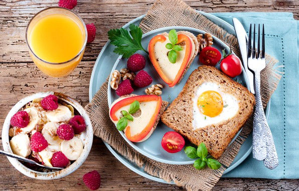
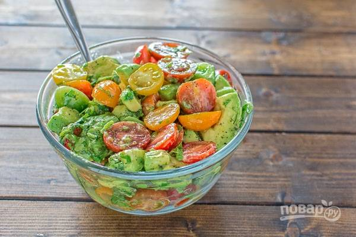
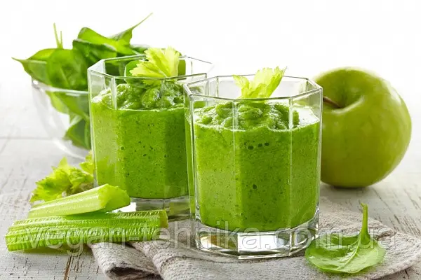

5 правил здорового завтрака
Завтрак — самый важный приём пищи. Узнайте, какие продукты помогут зарядиться энергией и сохранить здоровье.
Просто о вкусной и полезной еде. Рецепты, советы и идеи для вашей кухни.

Завтрак — самый важный приём пищи. Узнайте, какие продукты помогут зарядиться энергией и сохранить здоровье.

Лёгкий и сытный салат, который можно взять с собой на работу. Готовится за 15 минут.

Идеальный напиток для утра: шпинат, банан, яблоко и имбирь. Взбодрит лучше кофе!